Plots comparing MCMC estimates to "true" parameter values. Before fitting a model to real data it is useful to simulate data according to the model using known (fixed) parameter values and to check that these "true" parameter values are (approximately) recovered by fitting the model to the simulated data. See the Plot Descriptions section, below, for details on the available plots.
Usage
mcmc_recover_intervals(
x,
true,
batch = rep(1, length(true)),
...,
facet_args = list(),
prob = 0.5,
prob_outer = 0.9,
point_est = c("median", "mean", "none"),
size = 4,
alpha = 1
)
mcmc_recover_scatter(
x,
true,
batch = rep(1, length(true)),
...,
facet_args = list(),
point_est = c("median", "mean"),
size = 3,
alpha = 1
)
mcmc_recover_hist(
x,
true,
...,
facet_args = list(),
binwidth = NULL,
bins = NULL,
breaks = NULL
)Arguments
- x
An object containing MCMC draws:
A 3-D array, matrix, list of matrices, or data frame. The MCMC-overview page provides details on how to specify each these.
A
drawsobject from the posterior package (e.g.,draws_array,draws_rvars, etc.).An object with an
as.array()method that returns the same kind of 3-D array described on the MCMC-overview page.
- true
A numeric vector of "true" values of the parameters in
x. There should be one value intruefor each parameter included inxand the order of the parameters intrueshould be the same as the order of the parameters inx.- batch
Optionally, a vector-like object (numeric, character, integer, factor) used to split the parameters into batches. If
batchis specified, it must have the same length astrueand be in the same order astrue. Parameters in the same batch will be grouped together in the same facet in the plot (see the Examples section, below). The default is to group all parameters together into a single batch. Changing the default is most useful when parameters are on very different scales, in which casebatchcan be used to group them into batches within which it makes sense to use the same y-axis.- ...
Currently unused.
- facet_args
A named list of arguments (other than
facets) passed toggplot2::facet_wrap()orggplot2::facet_grid()to control faceting. Note: ifscalesis not included infacet_argsthen bayesplot may usescales="free"as the default (depending on the plot) instead of the ggplot2 default ofscales="fixed".- prob
The probability mass to include in the inner interval. The default is
0.5(50% interval).- prob_outer
The probability mass to include in the outer interval. The default is
0.9(90% interval).- point_est
The point estimate to show. Either
"median"(the default),"mean", or"none".- size, alpha
Passed to
ggplot2::geom_point()to control the appearance of plotted points.- binwidth
Passed to
ggplot2::geom_histogram()to override the default binwidth.- bins
Passed to
ggplot2::geom_histogram()to override the default binwidth.- breaks
Passed to
ggplot2::geom_histogram()as an alternative tobinwidth.
Plot Descriptions
mcmc_recover_intervals()Central intervals and point estimates computed from MCMC draws, with "true" values plotted using a different shape.
mcmc_recover_scatter()Scatterplot of posterior means (or medians) against "true" values.
mcmc_recover_hist()Histograms of the draws for each parameter with the "true" value overlaid as a vertical line.
Examples
# \dontrun{
library(rstanarm)
alpha <- 1; beta <- rnorm(10, 0, 3); sigma <- 2
X <- matrix(rnorm(1000), 100, 10)
y <- rnorm(100, mean = c(alpha + X %*% beta), sd = sigma)
fit <- stan_glm(y ~ ., data = data.frame(y, X), refresh = 0)
draws <- as.matrix(fit)
print(colnames(draws))
#> [1] "(Intercept)" "X1" "X2" "X3" "X4"
#> [6] "X5" "X6" "X7" "X8" "X9"
#> [11] "X10" "sigma"
true <- c(alpha, beta, sigma)
mcmc_recover_intervals(draws, true)
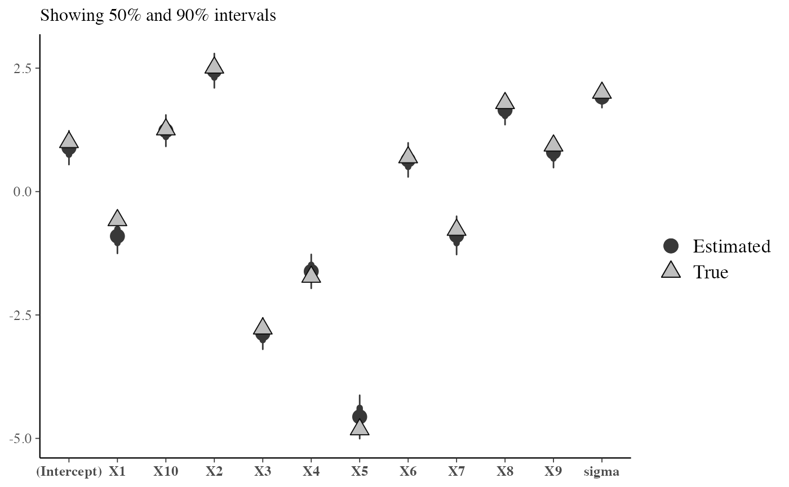
# put the coefficients on X into the same batch
mcmc_recover_intervals(draws, true, batch = c(1, rep(2, 10), 1))
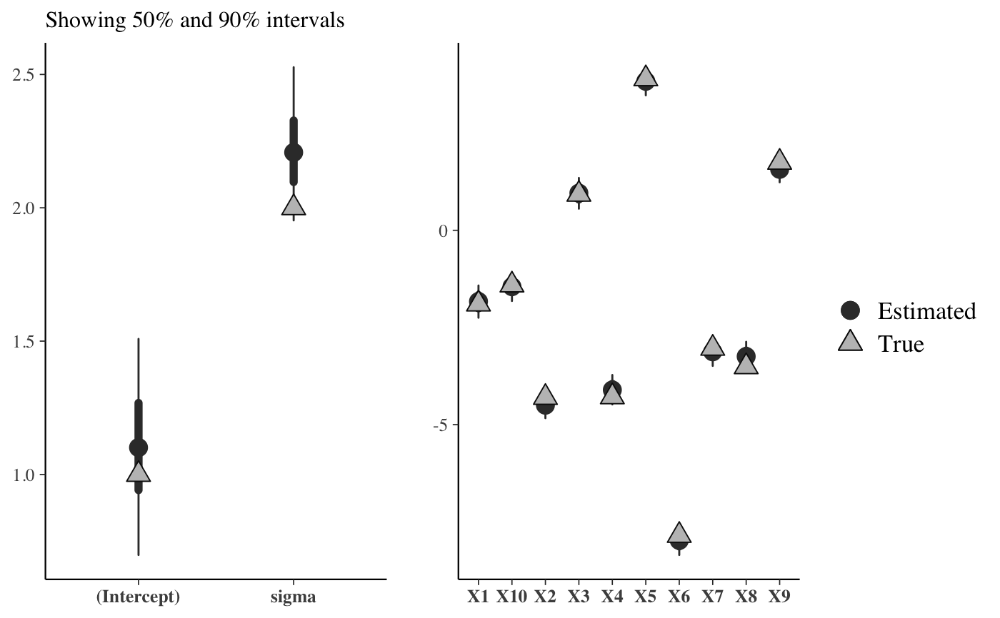
# equivalent
mcmc_recover_intervals(draws, true, batch = grepl("X", colnames(draws)))
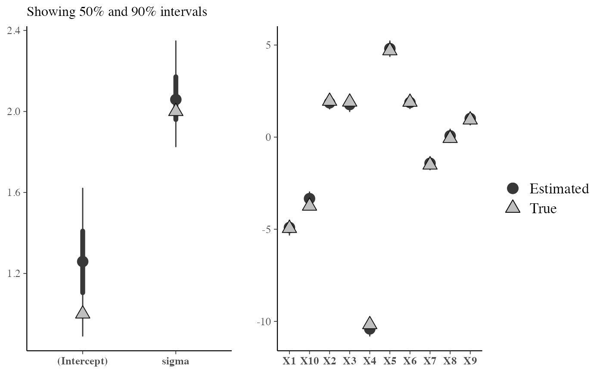
# same but facets stacked vertically
mcmc_recover_intervals(draws, true,
batch = grepl("X", colnames(draws)),
facet_args = list(ncol = 1),
size = 3)
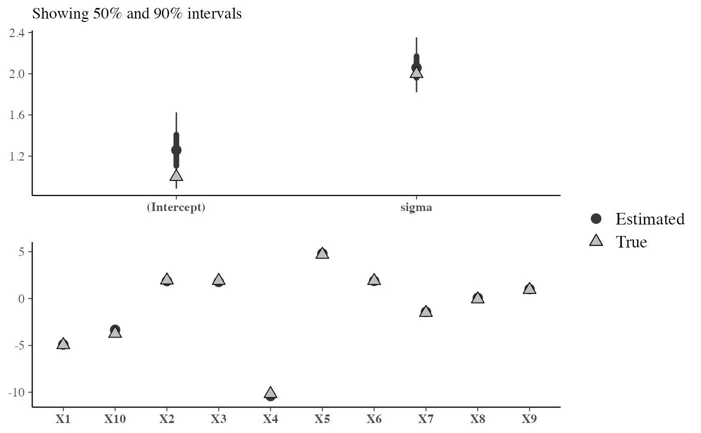
# each parameter in its own facet
mcmc_recover_intervals(draws, true, batch = 1:ncol(draws))
 # same but in a different order
mcmc_recover_intervals(draws, true, batch = c(1, 3, 4, 2, 5:12))
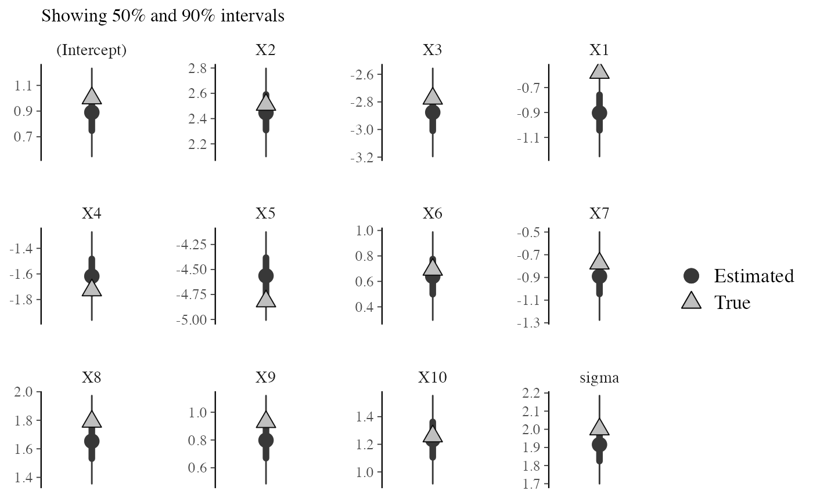
# present as bias by centering with true values
mcmc_recover_intervals(sweep(draws, 2, true), rep(0, ncol(draws))) + hline_0()
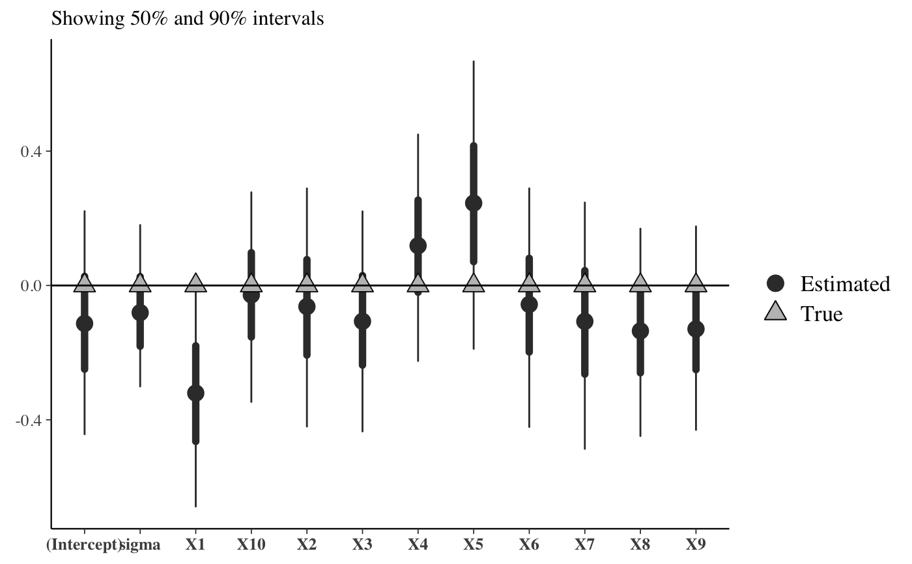
# scatterplot of posterior means vs true values
mcmc_recover_scatter(draws, true, point_est = "mean")
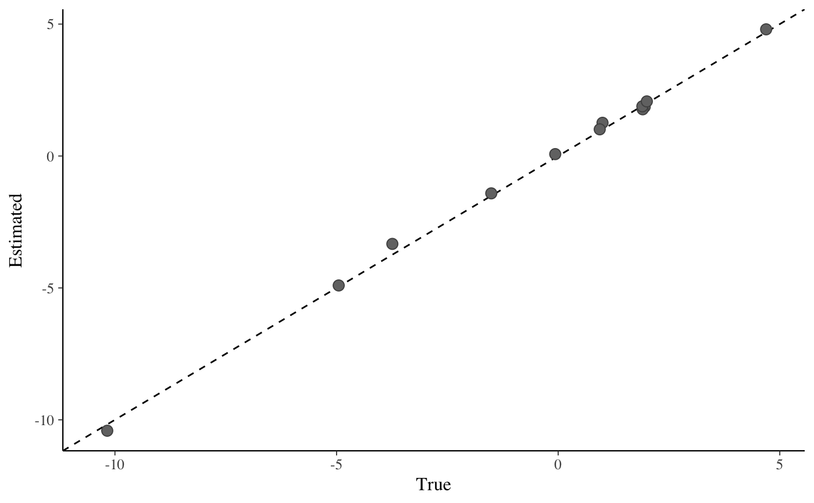
# histograms of parameter draws with true value added as vertical line
color_scheme_set("brightblue")
mcmc_recover_hist(draws[, 1:4], true[1:4])
#> `stat_bin()` using `bins = 30`. Pick better value `binwidth`.
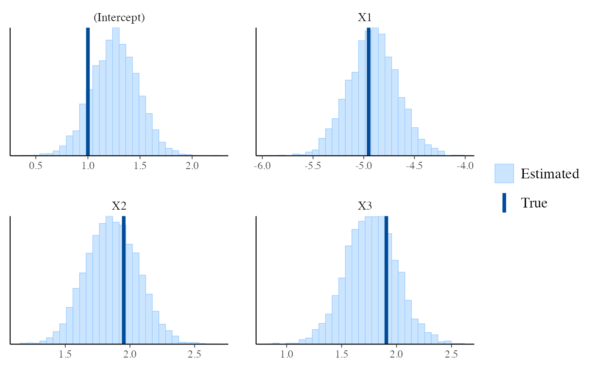
# }
# same but in a different order
mcmc_recover_intervals(draws, true, batch = c(1, 3, 4, 2, 5:12))
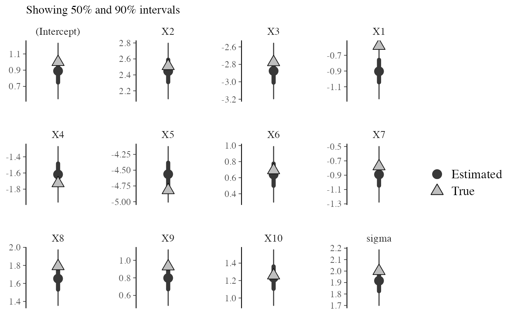
# present as bias by centering with true values
mcmc_recover_intervals(sweep(draws, 2, true), rep(0, ncol(draws))) + hline_0()
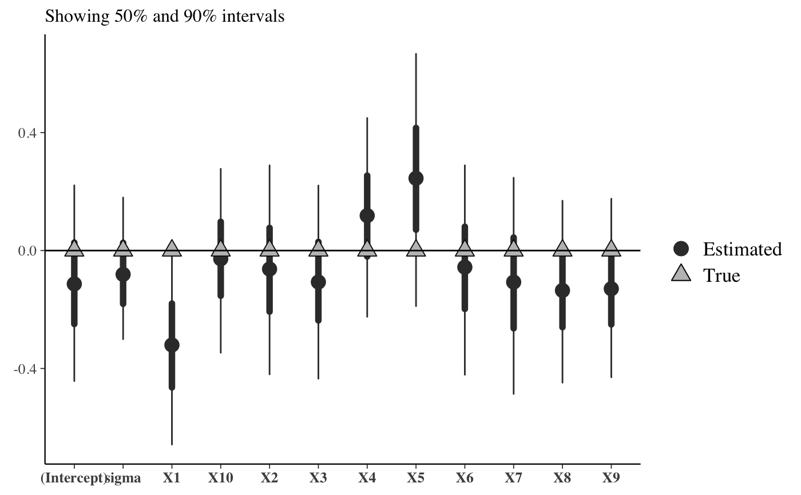
# scatterplot of posterior means vs true values
mcmc_recover_scatter(draws, true, point_est = "mean")
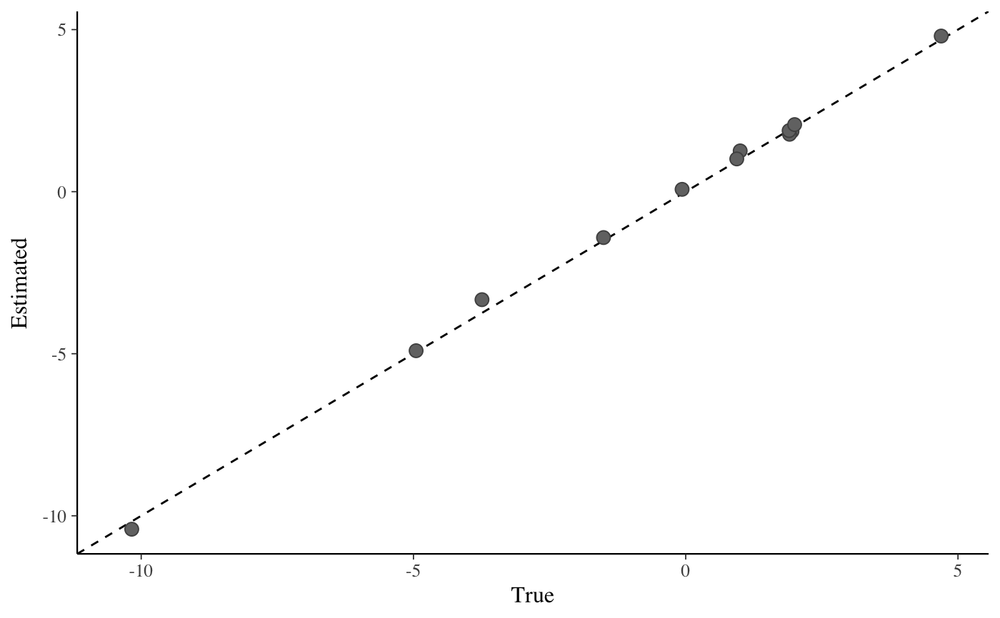
# histograms of parameter draws with true value added as vertical line
color_scheme_set("brightblue")
mcmc_recover_hist(draws[, 1:4], true[1:4])
#> `stat_bin()` using `bins = 30`. Pick better value `binwidth`.
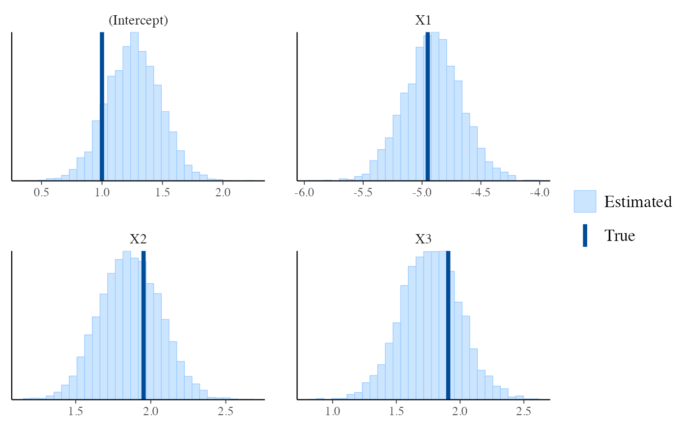
# }